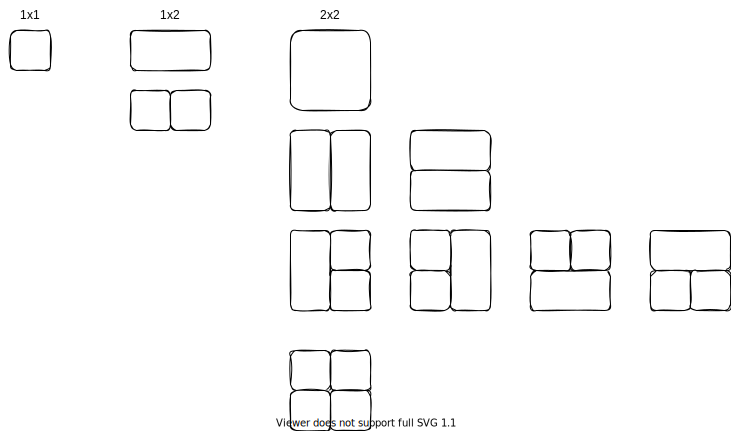
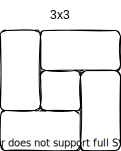

A Combinatoric Geometry Problem
Suppose you have a grid that’s W squares wide and H squares tall. How many different ways can you cover it with rectangular tiles? It’s easy enough to work out the answer for specific cases:
| Grid Size | Number of Tilings |
|---|---|
| 1x1 | 1 |
| 1x2 | 2 |
| 2x2 | 8 |
but I can’t figure out the formula for the general case—a simple recursive formula double-counts configurations like the four size-one squares in the diagram below.

Later: several people have suggested divide-and-conquer strategies, but so far I haven’t seen one that would generate this case, where there isn’t a seam spanning either the entire height or width:

*Later still: my brother asked me the question 20 years ago when he was starting a furniture-making company. Yetserday, Julian Berman got an answer from Bhavik Mehta at Cambridge: it turns out an undergrad in Louisiana named Joshua Smith, who was working with Helena Verrill, solved this in 2005 or 2006. Their work is online at https://oeis.org/A116694 and https://oeis.org/A116694/a116694.pdf, so, um, yay Internet, and thank you Helena, Joshua, Bhavik, and Julian.